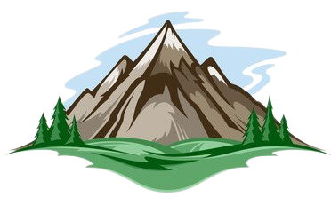
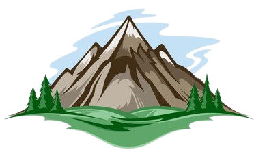

I'am Shashank
Not User, I'am the developer.

Not User, I'am the developer.
Hello
I am a web developer. I love coding and enjoy during the entire project of the web_development. Specialisation in frame works like react_js, angular, django. I 💘 bru coffee.
My Skills

Design & Development
I started learning to code when I was 12 years old because I wanted to make my own video games. Over time, I have gained a wealth of experience designing mobile and web applications.
Hot Wings Challenge
But my best skill is actually in eating hot mc burgers. I am the undisouted king of hot mc burger challenges. Ghosts peppers and carolina reapers are my favourite snacks.I love most popcorn while watching movie.
Get in Touch
If you love hot wings as much as I do
Love hot wings as much as I do ? Let's talk about how awesome they are! We can code while we eat hot wings!
Contact Me